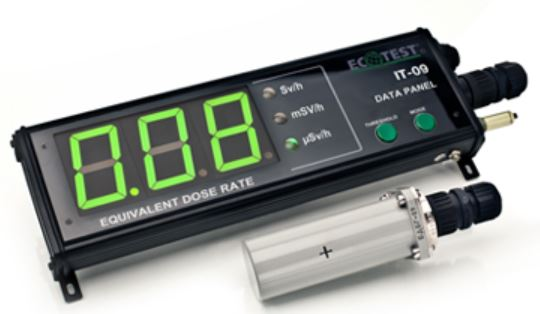
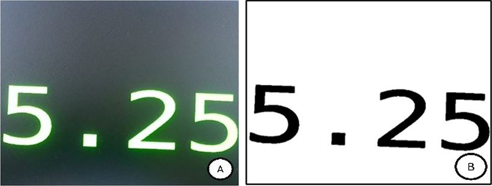

OCR-IT09

This project develop an automated system for reading and recording radiation dose data displayed on the IT-09 Data Panel using OCR technology. IT-09 Data Panel is a device for measuring radiation dose. I'm created Python script (doseRateSim.py) simulates the real-time display of an equivalent dose rate (μSv/h), mimicking data readings from the IT-09 Data Panel. It generates a random radiation dose value between 1 and 10 and updates it dynamically with small variations every 9 seconds, simulating real measurement fluctuations. The displayed dose value is shown in green text on a black background, accompanied by relevant labels for clarity. The script uses Matplotlib animation to continuously update the display, making it useful for simulating radiation monitoring systems similar to the IT-09 Data Panel.

This Python script (OCRIT09.py) captures real-time images from a webcam, processes them, and extracts text using Tesseract OCR. It continuously displays the camera feed and captures an image every 10 seconds, applying preprocessing techniques like grayscale conversion, thresholding, noise reduction, and contrast enhancement to improve OCR accuracy. The extracted text is printed and saved to a text file with a timestamp.

Explore the code:
Github Back to Projects